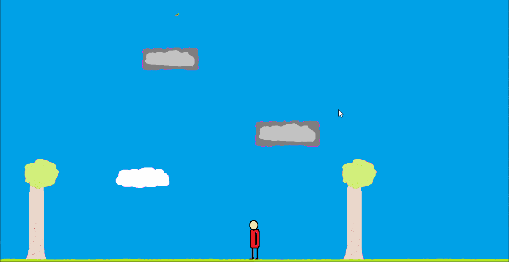
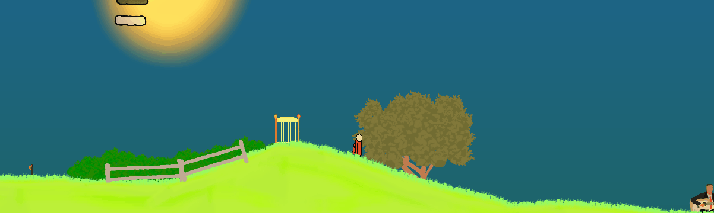
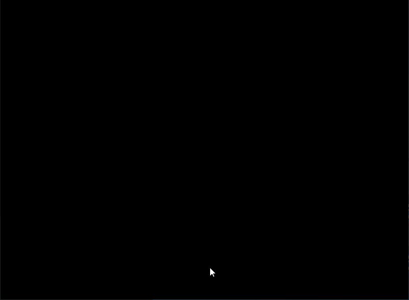
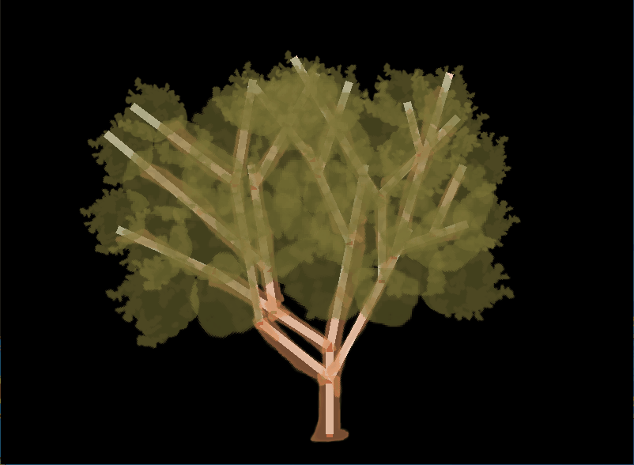
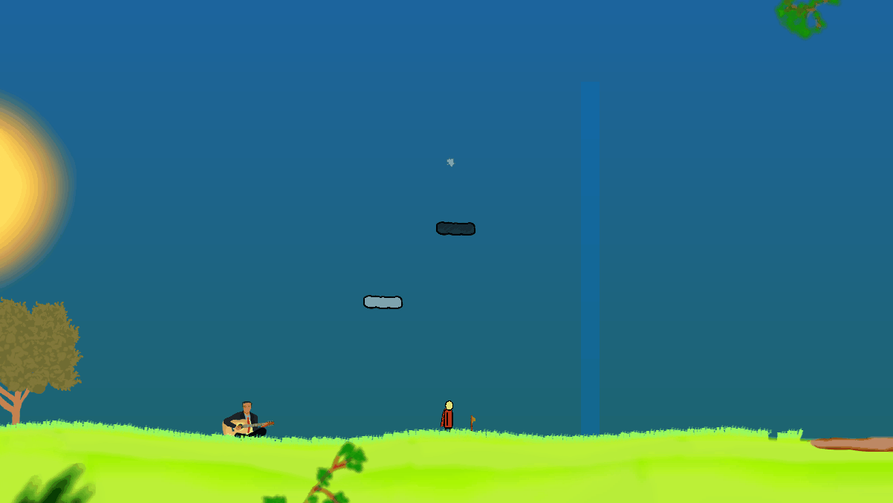

Written from scratch in c++, West-Ward is a puzzle game about a superhero with the power to control the wind. Venture out into a mysterious world full of puzzles, chat with strangers, travel to many locations, and uncover secrets and surprises. Each location is uniquely themed and offers fresh ideas. This game is available on steam.
Getting to experiment with the different rules and combinations of elements was some of the most surprising and delightful moments I’ve had in game development. Most of the levels from the prototype made it into the final game in some form.
Providing feedback for a player's actions is vital for many reasons. It was important that the player had some auditory and visual feedback when controlling the wind, which is why the grass moves and wind marks are visible in the sky. It’s the reason there are flags near every puzzle, and the main character wears a cape (originally this was a scarf). In addition to this, I wanted the environment to be reactive, that meant trees rustling, bushes bustling, and tire swings swinging. So I built a tool for it!
With it you construct and parent bones together to create a structure. You can assign weights and angle restraints to each bone to get the movement that you want. Each bone has its own independent bounciness to give the impression that it’s physically resisting the wind.
Sections of a texture can then be mapped to each bone and the objects can be simulated to preview what they will look like in game. The grass works in a similar way. They are a 2-bone structure each with a part of a grass blade mapped to them. They are random in size and vary slightly in angle to give a more natural appearance.
Game design is not an exact science. It’s important to be able to iterate on ideas quickly, try things out, and hone in on the elements that work well. Being able to toggle between the editor and the game was essential during development.